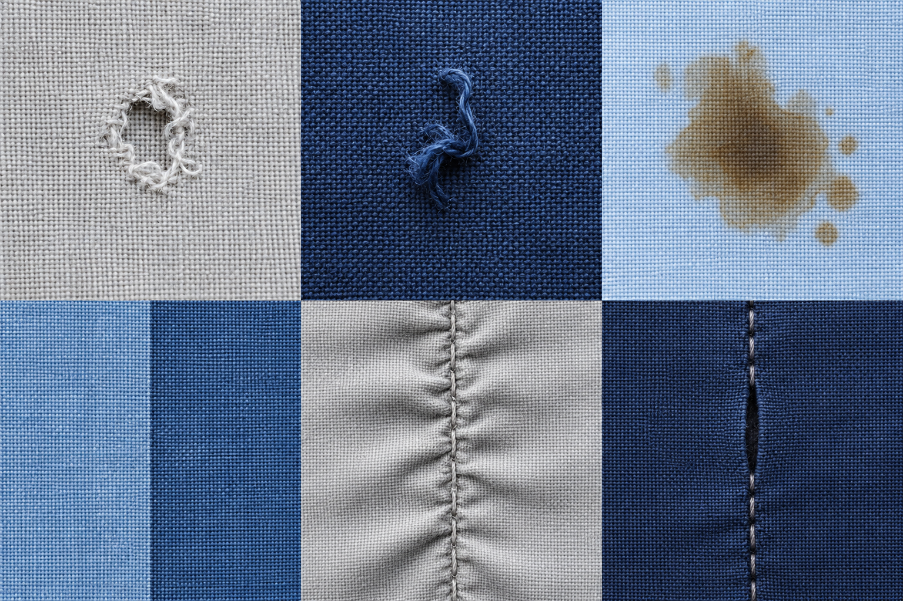

Furo no tecido
01Abertura com ruptura dos fios ou da malha.
Como inspecionar
O que observar
Procure uma abertura que atravesse o material. Observe as bordas sem puxar o tecido.
O que conferir
Marque a posição e compare com a área útil do molde. Registre a dimensão e se o defeito está isolado ou se repete.
Encaminhamento sugerido
Separe para avaliação quando atingir a área útil da peça. A destinação depende da ficha técnica e do responsável pela qualidade.
Atenção: Uma abertura prevista no desenho do tecido não é, por si só, um defeito.